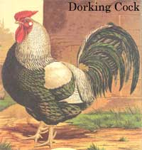
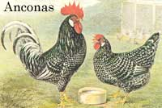
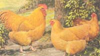
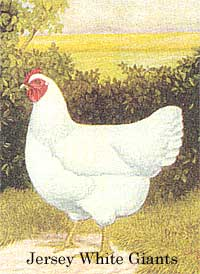
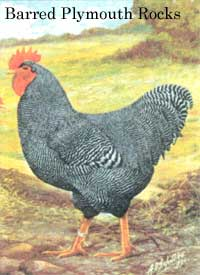
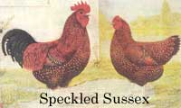
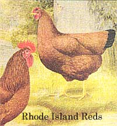

Preserve An Endangered Species With Heritage Chickens
Prevent the loss of heritage chicken breeds by starting your own unique flock.
By John Vivian
December/January 1996
Raise your own chickens and become a poultry preservationist . By John Vivian
Just imagine...breakfast eggs so fresh they're still warm from the nest; drumsticks with the real old-time chicken flavor, not hidden under fat-fried dough and some "secret blend" of herbs and...chemicals; your own chicken flock serving as a no-cost shredder/composter to convert garden and kitchen scraps to super-rich natural fertilizer; and (in a light-weight mobile henhouse) a 10- or 12-chickenpower tiller to cultivate and enrich your garden soil at the same time. Plus the better-than-TV panorama of plump hens and fuzz-ball chicks chirping and scratching contentedly in the dooryard. And to cap it all, the cheerily raucous "Aaawk-ah-Aw-aawk" of a rooster to welcome the dawn of each new day.
A home chicken flock is the first (and easiest) step toward self-sufficiency in animal food raising, and has long been the culmination of the country-living dream for city folks.
But in your wildest dreams, could you have imagined that keeping chickens can help preserve endangered species? True. You see, like the human species itself, chickens came "out of Africa" eons ago. Along with wild hogs, cattle, horses, and dogs, the varicolored wild African jungle fowl was domesticated early in our distant ancestors' spread around the globe. Since mankind began to farm, perhaps 10,000 years ago, people in every valley and hamlet on the Eurasian continents and on the islands of every ocean have been selecting and reselecting the best egg and meat producers from their chicken flocks.
When Europeans came to the Americas they brought along their favorite hens and roosters: the White Faced Spanish Black, Campines from Belgium, German/Dutch Lakenvelder, strains from around the Mediterranean and from farthest Sumatra and other Far Eastern islands, the Chinese Cochins, and dozens of English varieties named after their coloring and place of origin: the Hampshire Red, Black Cornish, Speckled Sussex, White and Black Leghorns, and more. Colonists bred new varieties that produced both plentiful eggs and quality meat throughout the variable New World climate: Plymouth Rocks, New Hampshire and Rhode Island Reds, the famous Canadian Chanticleer, and many other less-familiar strains. By the late 1800s, every farm community had, if not its own named variety, its own strain of "Rock" or "Leggern," plus pint-sized "Bantam" versions of every variety. And fancy-feathered or highly colored breeds like Polish Cresteds, Brahmas from China, Australorps from Australia, and the Phoenix from Japan with tail feathers that grew a yard long were shown at the County Fair.
But with 20th-century industrialization, the growth of cities, and the loss of small firms, poultry raising became just another agribusiness dominated by a handful of giant grain-broker corporations. Today, supermarket eggs sell for 99 cents a dozen and chicken parts for less than a half-dollar a pound-cheaper than bread and less than you or I can hope to produce them from $1 hatchery chicks and 20 cents /lb. feed.
So bottom-line home economics discourages home poultry production. And with the loss of the farmyard and backyard chicken flock, the strains of chicken bred so carefully for so long are being forgotten-and going extinct. Unless you and I and many others join the movement to perpetuate home-flock breeds, we stand to lose not only the variety of strains of gorgeously feathered fowl that our ancestors worked to create but also the varied poultry gene pool that holds the variety of characteristics that alone will assure that our poultry can withstand future assaults from disease and climatic change.
Other Advantages
There is, sadly, little commercial need for wide genetic variety among poultry breeds-and no need at all for natural birds themselves. What remains (aside from our home flocks) are a very few evermoreexquisitely-specialized commercial varieties. Egg producers are scrawny and nervous little creatures carrying just enough bone and muscle to support their egg-factory plumbing. Boiler/roaster breeds have been bred for the speed with which they turn grain to flaccid, watery, flavorless flesh with little distinction remaining between white, fibrous flight muscle and the dark, wiry running muscle of leg and thigh.
Scariest of all is what has happened to the wild turkey, a crafty bird that eats acorns and roosts in trees-the species that Benjamin Franklin wanted to certify as America's national bird (rather than the fish-scavenging bald eagle). The original domesticated but self-sufficient bronze-breasted turkey is so rare today it is on the endangered list of the American Livestock Breeds Conservancy, which funds a periodic census of poultry breeds remaining in America. (Support them; see page 88 for the address.)
Today's commercial turkeys are incubated and brooded in electric appliances; live out their brief lives on computer-formulated rations and medicated water, standing on wire-mesh flooring in tin roofed sheds; and never see, touch, or taste the real world. Their plumage has been bred so thin the birds'd never survive a good rain, let alone a cold winter, and it's been bleached white so pin feathers will show less on dressed carcasses. And they are huge-at 45 pounds, several times their natural weight. So big they couldn't fly up to roost in a tree even if they could recognize one. So big they can't even breed naturally! Fertile eggs are produced through artificial insemination. And even then, egg viability-percentage of fertile eggs that produce healthy poults-is steadily diminishing.
The Poultry Biz
Brutal competition has winnowed the egg-and-poultry business to a few huge cost-conscious corporations. A mere three turkey growers serve all of Canada, and in the eastern United States, Tyson and Perdue control the majority of meat-chicken sales. In pursuit of profit, corporate geneticists are breeding out all the birds' native survival traits in favor of more efficient conversion of feed to egg or flesh. No matter that the shells of store-bought eggs are paper-frail and wouldn't survive a week of being rolled around in natural incubation under a hen, that the whites are thin and watery, and what color the yolks contain comes from yellow dyes in the feed rather than natural hen-produced carotene. No matter that broilers are bred to grow so fast they are freaks. Cooked briefly, the flesh is juicy and fork-tender. But compared to a natural bird, it is watery, flaccid, and tasteless. Plumage and musculature is unable to support flight, and bones are just strong enough to keep the birds upright through their preadolescent growth spurt to slaughter weight: 4 pounds at only 4 weeks of age.
Gene Pool
As our once numerous native-bred poultry varieties go extinct from neglect, they take with them not only their unique mixtures of domesticity and native survival skills but the gene pool that contains an endless variety of characteristics that any species needs to survive in a changing natural environment-change that is liable to accelerate as global warming (or maybe global cooling?) brings home to roost the effect of our waste of CO 2 -producing hydrocarbon fuels and ozone-depleting aerosols.
What little genetic diversity remains among chickens is confined to the flocks of concerned home-poultry fanciers like you and me.
Indeed, a while back when commercial breeders sought a super-quick-growing broiler, they crossed Barred (Plymouth) Rocks with purebred Cornish that survived only among backyard show-chicken breeders. The Rock-Cornish cross is raised for all meat-bird sizes and the fastest-growing substrain is sold today as "Cornish Game Hen"-a marketing distortion, as the birds are only half Cornish, no more game animals than the family cat, and are young roosters (cockerels) as well as hens (pullets). When raised on high-protein feed, the "game hen" Rock-Cornish reaches 1- to 1 3/4-pound dressed weight and edible plumpness in a little more than a month, 4- to 5-pound fryer weight in 8 weeks of growth, and 7-or 8-pound roaster size in 10 weeks. They are still babies; a hen doesn't mature to egg-laying age till 5 or 6 months-20 to 24 weeks of age.
But when next a particular genetic characteristic is needed by the industry (say, a higher egg-fertility rate that will be essential someday if Broad-Brested White turkeys are to survive), it may not have survived extinction. Poultry raising today has become a monoculture as dearly as are the countywide fields of corn in Kansas or wheat in Manitoba, where every stalk is a genetically identical hybrid clone-all of them potentially susceptible to a new pathogen.
But plant science maintains a gene pool of wild and semiwild varieties. The Green Revolution of the seventies came when wild and cultivated rice strains were crossed to nearly double food supplies for the world's most hungry. And (so far) every time an epidemic has threatened the world's cereal crops, they've managed to splice in a resistant gene in time.
But, till recently, nobody has attempted to maintain a poultry gene pool, and authorities fear that a single drug-resistant mutation in a common disease-causing organism such as coccidium (a gut-infecting protozoan carried by wild birds and in the sod and blown around in dust everywhere) could decimate global commercial flocks before medication could be developed or a resistant gene located.
So much of the wild hardiness has been bred out of poultry that they are susceptible to normal environmental variations. Each winter cold snap or summer heat wave, you read of 10,000-bird flocks in Arkansas or Texas succumbing when their climate conditioning proves inadequate. In a brief power outage, they die from lack of water. In a really severe interruption of service (attendant to a major earthquake, fire, flood-or worse) these poor creatures could no more survive on their own in nature than could services-dependent human city dwellers.
Our Role
MOTHER's readers were among the farsighted few who popularized chemical-free (organic) gardening and resource conservation long before ecology became conventional wisdom and Environ-mentalism a political Cause, and so we have a natural-indeed, almost a mandatory-place in the movement to retain our native poultry varieties. For what its worth, since the mid eighties, we've been working to breed semiwild forage-feeding skill and the chick-raising instinct back into my Hampshire/Rhode Island Reds. Here's how you can join us if you like.
Cost
Chickens are gallinaceous birds-like pheasants and quail-and their young hatch out able to walk, feed, and drink for themselves. Hatcheries sell them when they're a day old in lots of 25. Expect to pay 25 cents to a dollar per conventional-breed chick-up to $5 for rare strains. A straight-run lot (half males, half females as-hatched) is usually cheapest and perfect for a home flock.
You'll be able to tell young males when the head-top combs begin to develop (faster, and pinker than the pullers') and they start adopting the upright posture and leaner bodies of males (vs. lower, plumper hens). Keep the 3 largest and most feisty young males for breeding. Isolate and fatten the rest for slaughter at 4 to 6 weeks of age. Of the dozen females, 10 or 11 will prove out, and give you 5 or 6 eggs a week apiece when they start laying pint-sized "pullet eggs" at 5 months and quickly begin laying full-size eggs for the neat 12 months or so. Then they spend 6 months molting and put their energy into growing feathers rather than eggs. They'll repeat the sequence for 1 to 10 years thereafter.
It is probably good economics to replace every hen after her best year. I keep any of the ladies who show high vigor, a moist and supple vent, bright eyes, and other signs of health. This is the only way to identify those with the genes to become good long-term layers, brooders, and foragers who will eat cheap and brood chicks so you don't have to buy replacements every year.
W ith luck and a good choice of breed (see sidebar: Selecting Your Breed), you can establish and raise a flock to laying age of 6 months for a couple hundred bucks: $25 for chicks, $50 for feed, $70 for recycled coopbuilding materials, and $50 For plastic or sheet-metal coop furniture: vacuum/dome waterer, hanging feeder, and feed and supplement bins. Buy your "furniture" new; used tin goods will be rusty and waterers especially short-lived, and may be contaminated with disease or parasites.
Then, if you can raise $2/dozen superfresh eggs for a half-buck a dozen in feed costs (and you can do much better letting birds forage in summer and feeding kitchen scraps and store producedepartment gleanings in winter), 12 good hens, each laying a half dozen eggs a week, will pay for themselves in less than 6 months. If you value your eggs at only a buck a dozen, you'll break even in a year.
Chicken Feed Doesn't Go for "Chicken Feed" Anymore
"Chicken feed" no longer describes a low price. I hark back to the tail end of the Great Depression when feed cost a penny a pound and Ralston-Purina and other mills vied for farmers' business (or their wives; presumably) by bagging it in 100-pound sacks of brightly printed muslin dress-making material. By the time I reached grade school, "She dresses in feed sacks" was a way to insult the country girls-no matter how fine and loving the hand-stitchery, smocking, and flowered embroidery on their little dresses.
To get 25 chicks off to a good start today, though, you'll need most of a nine-dollar, 50-lb bag of fine-milled starter mash-feed that is mildly medicated but essential for bought chicks that can import disease or succumb to diseases that your flock is immune to. Medicated mash prevents coccidi caused by the intestinal protozoan mentioned earlier, which is fatal to chicks once betrayed by bloody droppings. In my experience, hen-hatched chicks don't need medicated mash, but unless you collect and brood them, only about half will survive to maturity.
If you let chicks onto sand or gravelly soil or supply grit, they'll swallow the fine rock which, will stay in their gizzard to grind food ("scarce as hen's teeth" is a truism). After a month you can shift chicks from mash to pelleted feed. Grown birds spray mash-type ground feed around and waste much of it. High-protein broiler gels cost 18 cents to 20 cents a pound. You can raise broilers to 4 pounds live weight, 3 pounds dressed, for 3 pounds of feed per pound of dressed bird. (3 x 3 = 9; 9 x 20 cents = $1.80 per bird or 60 cents /lb.-about half the supermarket price, though you can often get wings and necks or leg quarters on sale for less...and will pay double the price for a prime, organically raised bird.)
But if you raise eating birds during the growing/harvest season and replace bought feed with kitchen and canning scraps, garden trimmings, home-raised grain, or native forage you can reduce the cash cost considerably. I routinely raise a dozen 4-pound broilers on 10 pounds of starter and perhaps 50 pounds of grain and pels, harvesting 36 pounds dressed weight for about $10 cash cost-between 25 cents and 30 cents a pound. The only added cost is time: at most, a quarter hour a day to gather feed or move a mobile pen. (See sister article: "Build a Hen-Powered Garden Tiller" on page 37.) And after every storm, when I go to the ocean beach to collect kelp to enrich the gardens, I'm sure to devote some of the day to feeding this full supplement to the poultry. They attack it with enthusiasm.
Eggs
Your own eggs will cost you from a dime or two to a couple of dollars a dozen, depending on price of feed and percentage of the flock that's setting eggs as opposed to tending chicks, molting, or otherwise eating but not laying.
When our children were little and loved and named every hen whether she was laying or not, I didn't dare even suggest culling old Clucky or Henny-Penny but accounted for chicken feed along with the dog food.
Now, with the kids more or less grown, before my birds come indoors full-time for the winter, I send to the stew pot or freezer every hen that begins to show the lethargy, dull eyes and plumage, bleached legs, and dry, puckered vent of a nonlayer. With layer pellets costing on average 17 cents /lb., I figure an average yearly cash cost of about 25 cents /dozen eggs: from a few pennies in the peak of harvest season when laying is at its height and birds are on free range during the day to 50 cents /dozen in the depth of winter when laying rate is about 50 percent and when I buy the most feed. Still ahead of supermarket prices that range from 99 cents to $2.50/dozen.
One secret to keeping feed costs low in winter is to arrange with a local supermarket to collect lettuce, cabbage, and other trimmings from the produce department. Chop it up and feed it to the hens early in the day, before you give them access to bought ration. In our cold climate, I feed in small quantities so it won't freeze before they can eat it.
In winter, you'll have to provide grit and ground oyster shell or garden lime-stone (not processed lime of any kind, dolomite, or diatomaceous earth) to supply calcium for the birds if they are not on full-time bought ration. I keep it in a shallow tuna can, the bottom hole-punched and firmly tacked low on a wall and kept brimming with dean, sharp sand and small gravel. I collect shells and grit from the ocean beach, but stream or river sand/gravel mix is just as good, or you can buy grit and calcium supplements from a feed store if you must. The birds will peck at it as needed. Particulars regarding proper space and housing facilities are covered in the companion amide beginning on page 37.
Never let eggs stay in the nest for more than a few hours. I try to collect morning, noon, and evening so they're clean, unfrozen in winter, and still moist with the protective bacteria-inhibiting film the hen gives them. (Never wash eggs or you'll invite bacteria to migrate through the shells, which are semiporous to let growing chicks respire.) Refrigerate table eggs immediately. They last in refrigeration for 6 months-though they'll resemble store eggs by the end of that time.
Neighbors
Most municipalities in "Metro" areas surrounding big cities forbid livestock inside town limits. Cityfied neighbors may have dogs that come over and leave their waste all over your lawn, but they'll complain about the slightest smell or noise from chickens, and will sic the cops on you if a hen escapes and takes a nip from their prize tuberous begonias or scratches up a few nasturtium seeds.
A single marauding hen of a good foraging strain can trash a flower garden in a few minutes, whereas modern chicken breeds that have forgotten how to scratch up their own dinner will often refuse to leave the henhouse; the hybrids I ran when I first took on chickens would come out into their fenced run in nice weather but were afraid of rain and flat refused to step out into snow.
Once they get used to foraging (they have to relearn each spring), the mixed Reds I keep now expect to be let out of the henhouse at daybreak and will raise a squawking ruckus till the hatch is opened. I don't give them access to the feeder till evening or they'd stuff themselves on bought feed and range for fun, not breakfast. Hungry, they will range up to 100 yards from the pen but-like most chickens-forage only over open ground where they find grass and other small seeds. They'll take a nip out of each red tomato and pepper and scratch up young plants, so I rig poultry netting or an electrified fence of three strands of conductor-embedded plastic wire arranged at 2, 4, and 6 feet above ground level on nonconductive fiberglass rods around the garden.
Don't plan to keep wide-ranging poultry breeds in town (they'll fly over or dig under fences to satisfy their natural ranging urge). A bird of a more domestic strain may get out, but she won't range out of soft-clucking distance of the flock. Don't let any breed run loose if you have neighbors within a quarter mile. Chicken droppings don't compare to dogs' but are half-dollar-sized blobs that stick to shoes and aren't welcome if tracked into a neighbor's kitchen.
If you want to keep chickens in an urban area, first get a zoning variance, including approval of all abutters. Don't plan to keep roosters; their harsh and piercing crow is a turf claim and harem call designed to travel for a mile; it will be heard even if you coop them till noon. Don't keep old hens in town either, unless they're a super-gentle breed such as the Jersey Giants. Hens' "BLEAK, Blerk, Blerk" irritation call is as loud as and much more frequent than a rooster's crow, and they get noisier as they age. And keep doors latched and fences tight (including wire mesh over the top of any outside run, to keep pigeons from flying in and mooching feed and introducing disease and parasites).
Most country towns passed antilivestock ordinances in the teens and twenties after autos replaced horses and buggies and they could pave over the manure/mud muck that made the main streets of preindustrial towns smell as ripe as any barnyard. But they tend to be lenient if you maintain peace with the neighbors and keep a dean, quiet operation.
The secret of fly and odor control is screens over henhouse windows and a deep, loose litter in the house and outdoor run. Before the birds arrive, arrange for delivery of plenty of loose, dry organic material of the kind that you'd use for a garden mulch or horse bedding. Straw, lumber sawdust and wood chips, peanut hulls, or ground corncobs are all good. Keep a 6-inch-deep layer in the henhouse, stirring and loosening it on the floor each day if the birds don't, and changing and disposing of it before it gets too redolent of ammonia. Scattering wood ashes will prolong bedding life. When we kept chickens in a country town during the seventies, we used wood chip horse bedding I had collected and spread on the garden during a hard rain so the ammonia would carry down into the soil.
Pets
Cats don't bother chickens-not even tiny chicks. Dogs are another matter. Some terriers and hunting breeds will even dig under fencing to get at them. I found the best way to keep our beasts honest is to take them out as 8-week-old puppies to where the adult birds are scratching in the barnyard. A biddy hen with chicks is a great dog trainer. The puppies'll naturally want to go woofing after the chicks, but a hen is a savage defender of her young. A serious henpeck on the nose has always been enough to put our homestead hounds in mortal terror of chickens for life.
More than once, I've seen our huge German shepherd Harley awakened from a deep afternoon nap in the backyard by a chick attack. They'll scrabble up his sides and scratch after whatever they can find in his coat. Except for a few inadvertent twitches when a sensitive whisker or eyelash gets pulled, the great fool holds stone-still with his eyes squeezed shut rather than confront the momma hen as she parades right in front of his nose, scratching dust in his face, her beady eyes alert to the slightest danger to her brood.
Raising Chicks
You'll have healthier birds and fewer disease and parasite problems if you order chicks to arrive in the spring. Hen chicks that arrive at the end of April will go into the henhouse in late June and begin laying in October. (See when the local feed store will be distributing orders to determine the ideal date in your locale.) This is the rush time for hatcheries, so get your order in by late winter.
Regional hatcheries sell by mail, for pickup at the office, or through area feed stores, farm coops, and 4-H or FFA. Birds are guaranteed to arrive alive and in good health and to be free of the common diseases pullorum and typhoid. They can be inoculated against several other diseases and debeaked (to prevent pecking that can lead to cannibalism) for a small fee. Debeaking is mutilation and suitable only for huge flocks kept in close quarters. But inoculation against Marek's disease only costs a thin dime a bird and is good insurance if you live in an established poultry-growing area or plan to keep adult birds to breed your own chicks.
If you plan to take the birds to shows where they can be exposed to disease, order inoculants for Newcastle and bronchitis (administered in the water), pox (carried by mosquitoes; birds get a simple auto-applied shot), and laryngotracheitis (administer with an eyedropper). You'll get about 500 doses for $5, but refrigerated, the medications will last for a long time.
I've never tried it, but growers I respect recommend a water additive, called QuikChik, for new chicks. It isn't a medicine but a vitamin/mineral supplement laced with electrolytes-kind of a veggy-tonic/Gatorade for chickens that gets travel-stressed chicks to eating and racing around with the first sip. A 4-ounce packet that will handle 200 chicks for 2 weeks can be shipped in the carton along with your birds for less than $4.
Your choice of breeds from most hatcheries will be limited to the best-selling commercial breeds: typically, several leghorn hybrids (skinny white-egg super-layers); in the Northeast, one or two hybrid brown-egg super-layers; several heavy-bodied dual-purpose meat/egg hybrids; a Rock-Cornish broiler/roaster cross; and one or more of the dualpurpose purebreds, such as Rhode Island Reds or Barred Rocks, that best suit the small home flock.
The traditional/endangered native strains of the old-time purebreds can be a little harder to locate and purchase. Natural chickens just naturally begin laying when the days lengthen enough to warm the skin in mid to late February, taper off when days shorten in late summer, and quit in September.
Breeding flocks for many scarce types are small and often have only a few surplus chicks available for an even briefer period each year. If you want a really scarce or exotic strain, get your order in early.
You'll learn most buying firsthand from a local small-scale or hobby/show breeder (but you do risk getting problem stock). Only a few small breeders are large enough to advertise in the yellow pages or classifieds in the local papers. Ask around at the local farmers market or feed store or at the poultry shed at the County Fair.
You'll get excellent help, advice, and the location of breeders from the rare-breed organizations listed on page 88.
The mail-order catalogs also listed offer a variety of nonstandard poultry. All chicks are fully guaranteed. Some hatcheries sell books, feed, medications, and equipment as well. I suggest sending for all the catalogs. They are a lesson in themselves and most are free. Many offer books and equipment that are simply unavailable anywhere else. Also, shipping of live animals is costly and the closer you are to the hatchery, the less you'll pay for shipping.
My old favorite was Hall Brothers, a major New England hatchery of conventional breeds only; they supplied the chicks sold by Sears back when Sears still valued country customers. Their purebreed Reds were the original foundation stock for my own flock of foragers/breeders. There's no longer a listing for them, and I'm afraid they may be out of business. I can, however, vouch for Murray McMurray Hatchery in Webster City, Iowa (800) 456-3280.
Arrival of the Chicks
If you order your chicks locally from a breeder or feed store, you'll get a call when they are ready. Most mail-order chicks arrive by UPS these days, preceded by a telephone call or postcard. If they are sent by mail, the PO. will call for you to pick them up. The clerks may be alarmed at the birds' cheeping if they've never handled chicks before. (But not as alarmed as when they get a screen cage full of humming honey-bees. Jostle chicks and all you hear is weak little peeps of protest. Jostle several thousand bees and you get a growl right out of the sound track of The Swarm.)
SELECTING YOUR BREED
The following list summarizes charac teristics-stressing rarity and ability to forage and brood chcks-of some of the traditional American and Canadian meat/egg "dual-purpose" breeds. Not included, but worth consideration for home raising, are: bantam chickens, ducks and geese, turkeys, game birds, guinea and pea fowl, exotics like the bare-necked "turken" and fancy-feathered breeds like the endangered Ancona and Wyandotte that are raised for show and the sheer pleasure of having a flock of exotic and gorgeous creatures strutting around the place. Specifically excluded is the Aumcana, a peculiar looking bird from Peru still being touted as the Easter Egg Chicken, that comes in many colors and lays colored eggs that are low in cholesterol . The eggs are colored alrigh-mud brown to dull khaki to bilious green. They are low in cholesterol only because they are small for a 5- to 5 1/2-pound dual purpose breed. But the adults are too smart for a meat animal. Let run, they ingratiate themselves with the kids or the cat and follow them into the house. Once they locate the dog food you can't keep the damned things out. They'll lurk in the shrubbery, then make a mad dash through a just-opened door and, wings flapping and droppings dropping, straight to the dog's food bowl. They become pests or pets whether you like it or not. Actually, I like them, but so do enough other folks that they aren't seriously endangered.
Endangered Production Breeds
BLACK AUSTRALORP: Bred from British Black Orpintons in Australia. One of the best brown-egg layers, and a fine meat bird that dresses out at 4 pounds. Gentle, calm, and well suited to confnement. Glossy black plumage.
BARRED ROCK (OLD STRAIN OF PLYMOUTH ROCK ): Early New England cross of Dominique and Black Java. Persistent layers of brown eggs; yellow skin and heavy body at almost 8 pounds live weight.
CHANTICLEER: Canada's oldest native-bred strain. A good brooder and mother. Tolerates cold like a musk ox.
DELAWARE: Big dual-purpose bird with white body and black tail feather tips. Good dual-purpose on its own, or cross males with New Hampshire hens for an old-time fast-growing broiler.
DOMINIQUE: Oldest American breed. Medium-sized dual-purpose. Black-and-white-barred plumage with prominent tail feathers. An excellent forager on free range.
DORKING: Ancient breed introduced to England by Romans. Occasional brooder.
JERSEY GIANT (BLACK): To 11 pounds. Originally bred from oriental stock in Jersey in the late 1800s. A huge, gentle bird. Lays brown eggs in all seasons but is a lousy brooder.
NEW HAMPSHIRE: Red-plumed. Developed from Rhode Island Reds for faster maturity, more and larger brown eggs. Broody instinct emerges in same individuals. Reaches 7 pounds.
RHODE ISLAND RED (ORIGINAL STRAIN): A good forager, and some are excellent mothers, though setting instinct has been largely bred out of modern strains. 7 pounds.
WYADOTTES (WHITE): Plump layers of abundant brown eggs. Cockerels flesh out quickly. Makes a marvelous dual-purpose chicken. 6 pounds.
Moderately Endangered Production Breeds
ORPINGTONS: White and Buff (golden) are large bodied with white skin and plump, juicy flesh. Brown eggs. Heavy, to 8 pounds. Fine brooders and mothers.
SPECKLED SUSSEX: Excellent forager and brooder, so especially suitable for a home flock. Medium-heavy at 6 pounds, efficient feed converter of light brown eggs. Spectacular mahogany body with dark tail, white-tipped feathers. Perfect for a small family. Good show birds. (And the next breed we plan to try. Only about $5 more a batch of 25 than more common varieties.)
Have your brooder, feeder, and water hooked up and operating so the chicks can warm up and take a long drink as soon as you get them home. You can buy fancy brooders, and an enclosed unit is necessary for year-round outdoor use.
I keep chicks in the kitchen for their first few days and on the porch for the first week, brooding them under an ordinary tin-domed clamp light from the hardware store with a low-watt infrared heat lamp (not an ultraviolet suntan lamp-that will cook the chicks).
The lamp is suspended on a pulley from the overhead above a table with a big cardboard box on it with several layers of newspaper in the bottom. More conventional is to surround the warm spot on the table under the lamp with a barrier made from a strip of 6-inch-wide cardboard or aluminum flashing formed in a yard-diameter circle.
The lamp is first lowered to some 6 inches above the table to warm the surface. I scatter a little mash and fine sand under the perimeter of the circle the light makes on the table and put in two simple water fonts made of a saucer holding an upside-down plastic butter tub with a small notch cut in the rim. I fill the tub with warm water, put the saucer on top, and flip it. Water burbles out to fill the saucer but is kept from flowing all over by vacuum. A half brick on top keeps the chicks from jumping up and dislodging the tub and tracking in the water.
Chicks are shipped in a cardboard box with raffia flooring and air holes punched around the sides. When hatched they have a built-in 3-day supply of food and water and are not bothered by moderate heat variations. Let the box rest a bit and listen. A steady chorus of quiet chirps means contented chicks. Alarmed and rapid "cheep-cheep-cheep" means stressed birds. Either way, get them to the brooder directly.
Put them in one at a time, removing any pieces of raffia or dropping from feet or fuzz.
Then (especially if these are your first chicks) get ready for entertainment. They are fascinating to watch as they mill around, peck at grit and feed, grab a beakful of water and tip up their heads to drink it down, and then seem to collapse and fall asleep in an instant. The neighbors will all want to see, and the kids will want you to bring them to school for show-andtell. If you change the paper often, they even smell warm and fragrant for the first week or two.
The chicks will find the heat they need and should arrange themselves in a ring under the rim of the lamp. If they group under the bulb, lower it; if they pull far away, raise it. After a day, put mash in a pair of saucers with a weighted coffee mug or rock in the middle to keep chicks from soiling the feed. Once they find the feed, keep a small sprinkling of coarse sand on the paper.
When droppings appear, you'll find two kinds. Most are semifirm blobs of gray stool with a white patch of uric acid on top. Droppings may be semiliquid till the birds get used to their feed. Don't be alarmed when, after a week or more, you find occasional wet, greenish, bubbly droppings. This comes from organs in the gut that harbor microbes that digest cellulose and is normal throughout the bird's life. The odor will clear your sinuses real quick.
In a week the chicks will begin growing real feathers and in three weeks will lose their cuteness and will be raising a tine dust that can coat everything in the room. Time to put them on the porch or in their outside pen if you haven't already.
Keep the now adolescent, gawky, and decidedly uncute birds under the brooder light for a month, or till they are well feathered and start peeking over the top of a 6-inch-high barrier ring. If weather is cold, leave them under the light till low temperatures are above 50°F.
Don't introduce young birds into an established flock till they are 6 weeks old or better, or they may be badly pecked. Even then, if possible, put a wire-mesh division down the center of the pen to keep the new and old birds separated but in eyesight and clucking/bonding contact for several days.
Chickens are, frankly, "chicken"; m nature, flight is their main defense. If terrorized by grown birds, youngsters will pack into a fair corner, literally paralyzed with fear. They may not come out for water or food, or may push back against the wall so hard that birds at the rear of the pack will be smothered.
Selecting a Breed
See sidebars, read books and catalogs, join clubs, and visit other fanciers to select a breed. If your outdoor space is restricted, consider a big, calm, and mild-tempered breed that doesn't mind being cooped, such as the lovely soft-gold-colored Buff Orpington or Black Australorp.
To encourage the foraging that is important for self-sufficiency, keep a few of such hard-working varieties a, tire glossy black-and-white-speckled (naturally well camouflaged) Ancona to lead the flock into the field. They manure to egg-laying age in 4 1/2 months but will not set their eggs.
The instinct to incubate fertile eggs and care for the brood is the most desirable characteristic if we are to re-create Self-sufficient breeds. Bantams, semiwild Jungle Fowl (you can buy the real, original stock), the similar-looking varicolored Old English Game Cocks, or any of the several breeds of genuine fighting cock will set, but aren't good for much else but show and pure enjoyment.
If you buy Jungle Fowl, pen and treat them as you would other skitterish game birds such as pheasants. Fighting cocks are easier to handle, but don't let mature cocks so much as lay eyes on another male chicken. The birds will literally fight to the death.
I suggest that you select the large-bodied meat/egg breed that most appeals to you. For up to 50 hens, keep 3 roosters. (3 will fight less than 2, and if you only keep 1, you are out of luck if it dies or loses vigor.) Roosters will dig their claws into a hen's back and bite her comb in mating, but that's how it's done. Dab gentian violet horse medicine on any sore spots.
Keep your eves peeled for a lien that is going broody. A penned hen will stay on the nest, peck if you it try to remove eggs, fluff up her feathers, and fuss a lot. Her "cut-cut-cut" contented sound will change to a load "Blaaawk"
Most egg raisers try to discourage broodiness, but we want to encourage it. Give her a separate cage and a 2-foot-square brood nest kept full of fresh hay if need be to keep her setting. Lot her hatch all her own eggs to retain the setting tendency.
A hen with access to free range will he sneaky about brooding and will make a nest off in the bushes. She'll lay (fertile eggs if the roosters are doing the job you feed the otherwise worthless little martinets for) for several weeks till she accumulates a clutch of 12 to 18 eggs, which will hang fire till heated to hen temperature-when they'll begin to develop so they all hatch together. Fine hen will sit on them, turning, heating, and humidifying them nearly full-time till they hatch in 3 weeks. Unless you recognize all the birds or conduct a hen count every evening, you won't miss her when she begins brooding. She'll urine in briefly for feed and water only once in a while and will stay out nights.
Then one morning you'll be working in the yard, and around the barn or through a hedge will come Biddy with her little brood of yellow or red or black or brown, one-colo, striped, or spotted chicks darting in and out from under her wings. All the other hens will sit up a ruckus and mill around in welcome. Momma hen will strut around acting proud enough to pop-as well she ought to be.
In time, choose the biggest and the most feisty roosters arid plumpest hens from the brood to keep and you are on your way to helping restore self-reliance to our chickens. But in future, you must introduce outside strains to prevent atavism-where recessive genes predominate and the birds quickly revert to the ancestral Jungle Fowl.
For more information on ordering chicks and feed, and or a resource listing on raising chickens, tom to page 88.
Necessary Unpleasantness
Killing, plucking, and dressing fowl is the least appetizing part of the process. I've always felt that if you eat an animal you have an ethical responsibility to see it through the passing in a humane and respectful manner. But maybe that's too Native American for modern times. There's a book out now on chicken mobile-housing and raising by a fellow who recommends you avoid the nasty details by taking birds to a commercial slaughterhouse (for another dollar or three per). Lotsaluck fading one.
If you'd prefer to leave slaughter to someone else, skip the rest of this section. If you couldn't dream of eating your birds, you can still raise hens for eggs. When it comes time to replace eggedout hens, put an ad in the paper offering "Laying hens for a dollar apiece." The price will deter anyone but a mink farmer or someone else with a legitimate use for the birds-who will call, promise to treat your birds humanely, and offer to catch them and take them off your hands for nothing. You'll probably be happy to accept the offer.
You'll find more detail in the books recommended on page 39, but here are the basics of the slaughter/dressing process.
Capture birds at night on the roost; cage them and withhold feed (but not water) for 24 hours.
Get a tanner or other large pot of water boiling. Put bird in a killing cone (a metal half-funnel fastened to a wall) or suspend by the legs. Cut the throat lust behind the lower beak and bleed out. If you don't let the bird's heart pump out blood, you will have "fiery," inedible chicken.
A better method is to dispatch the upside-down bird instantly by holding the head firmly m one palm and inserting a sharp knife into the mouth, through the soft bone at the back of upper palate, and into the base of the skull. This takes practice but is the quickest, most humane procedure. You will feel the bird relax-feather muscles included-and may be able to pluck without scalding.
If feathers are tight, hold well-bled bird by the feet and immerse m hot (but not boiling) water and agitate long enough to melt fat around feather sockets, but not long enough to cook the skin (swish up and down in hot water for a good 15 seconds or so). Wearing rubber gloves, strip feathers while still steaming hot.
Remove head. feet, and neck; remove swallower tube from neck and attached crop from chest cavity at base of neck. You can scrub the feet thoroughly, boil to a pulp, and strain to get a lovely soup thickener that is used widely in Chinese cooking.
With a sharp, pointed knife, cut skin an inch deep and in a funnel shape (large end inside the bird) all around vent. Open the skin to the keel bone and pull out entrails. Pull fat from inside the carcass and around vent area and rend for cooking. Discard all innards but the familiar heart, liver, and gizzard. Open gizzard and remove girt.
Wash carcass inside and out with clean cold water only, and chill immediately to below 40°F. Cook within three days, or freeze immediately-the giblets separate from carcass.
|
 Heritage chicken breed: Dorking Cock |
 Heritage chicken breed: Anconas |
 Heritage chicken breed: Jersey Black Giant |
|
 Heritage chicken breed |
 Heritage chicken breed: Jersey White Giants |
 Heritage chicken breed: Barred Plymouth Rocks |
|
 Heritage chicken breed: Speckeld Sussex |
 Heritage chicken breed: Rhode Island Reds |
|